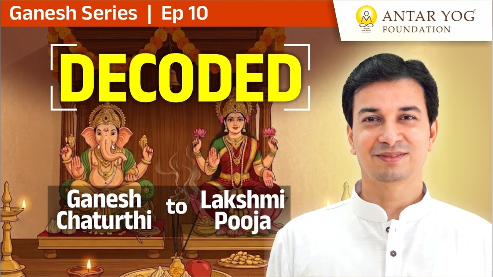

क्या छुट्टियाँ सिर्फ़ घूमने के लिए हैं?
भारत वह भूमि है जहाँ सबसे अधिक त्योहार मनाए जाते हैं और साल में सबसे ज़्यादा छुट्टियाँ मिलती हैं। हम मान लेते हैं कि ये मौज-मस्ती के लिए हैं।
पर गुरुदेव साफ़ कहते हैं: यह अवकाश (vacation) नहीं है। असली प्रश्न यह है कि असली छुट्टी होती किसके लिए है?
ज़रा सोचिए: पहले गणपति क्यों आते हैं? उसके बाद ही पितृपक्ष (महालय) क्यों? फिर नवरात्रि, फिर दिवाली, नरक चतुर्दशी, लक्ष्मी पूजन और पाडवा, इसी क्रम में क्यों?
क्या आपने कभी अपने त्योहारों के क्रम पर प्रश्न किया है?
गणपति: विवेक बुद्धि (Discernment) का जागरण
गणपति का अर्थ है विवेक बुद्धि, यानी सही और गलत को पहचानने की भीतरी समझ। जब यह जागती है, तभी आगे की यात्रा शुरू होती है।
यदि हम खुद वासना में अटके हैं और तुरीया (चेतना की चौथी, साक्षी अवस्था) तक नहीं पहुँचे, तो उन पितरों को कैसे मुक्त करेंगे जो स्वयं तमोगुण में अटके थे? जिसके गणपति के दस दिन सचमुच भीतर पूरे हुए हैं, वही अपने पितरों को मुक्त करने का अधिकारी है।
पितृपक्ष और नवरात्रि: ऋण से मुक्ति, गुणों पर अधिकार
पितृ ऋण (पूर्वजों के प्रति ऋण) से मुक्त हुआ व्यक्ति अब तीनों गुणों पर पूर्ण नियंत्रण करके उनका स्वामी बन सकता है। उसे शक्ति, धन और ज्ञान (power, wealth and wisdom) एक साथ प्राप्त होते हैं।
दुर्गा सप्तशती की साधना करते हुए वह एक महान श्रीविद्या साधक बन जाता है।
नरक चतुर्दशी: आख़िरी अंधेरा
साधक बनने के बाद भी भीतर नकारात्मकता एक बार फिर लौटती है। जैसे समुद्र मंथन में सबसे अंत में राहु अमृत चुराने आता है, उसी को यहाँ नरकासुर कहा गया है।
वह भी चला जाता है। फिर लक्ष्मी पूजन, महालक्ष्मी पूजन, और फिर साधक ॐ तक पहुँच सकता है।
पटाखे बाहर नहीं, भीतर फूटने थे
पटाखा भीतर के आनंद की अवस्था का प्रतीक है।
"मन में लड्डू फूटे दो। तो वैसे मन में पटाखे फोड़ना था। बाहर नहीं करना था।"
शास्त्रों में रसायन वाले बाहरी पटाखों की बात नहीं, भीतर फूटने वाले पटाखों का वर्णन है। हमने बाहर तो खूब बजा दिए, पर भीतर कुछ नहीं हुआ।
इस दिवाली, आपके भीतर क्या जगमगाया?
पाडवा: स्वर्णिम आभा बाँटने की योग्यता
इसके बाद साधक को अपने भीतर सारा विश्व एक रूप दिखता है, और सब कुछ शुभ दिखने लगता है। फिर पाडवा आता है, जब लोग एक-दूसरे को "सोना" (आपटे का पत्ता) देते हैं।
यह और कुछ नहीं, स्वर्णिम आभा (golden aura) है। अब साधक इसे बाँटने का अधिकारी बनता है। विजयादशमी, दिवाली और साढ़े तीन मुहूर्तों का पूरा रहस्य शिविर में विस्तार से बताया जाएगा।
रक्षाबंधन: ब्रह्मचर्य ही असली रक्षा
रक्षाबंधन का अर्थ है कि साधक को सभी स्त्रियों में माता और बहन दिखने लगें, केवल अपनी सगी बहन में नहीं।
वह समझता है कि यदि मैं ब्रह्मचर्य (इंद्रिय-संयम) का पालन नहीं करूँगा, तो एक दिन मेरी बहन पर भी यही संकट आएगा। कोई उसे फँसाएगा, लूटेगा, उसका चरित्र और जीवन बर्बाद करेगा।
"बहन का रक्षण करना मतलब बंदूक ले नहीं। खुद ब्रह्मचर्य पालन करके ही तुम्हारी बहन का रक्षण कर सकते हो।"
यह सांसारिक नहीं, आध्यात्मिक रक्षा की बात है। इसीलिए रक्षाबंधन गणपति से पहले आता है: पहले सभी स्त्रियों में यह पवित्र रूप दिखे। दिवाली की भाऊबीज भी इसी भाव का पर्व है। यह क्रम ऋषि-मुनियों ने यूँ ही नहीं दिया।
भोग प्रदेश बनाम मोक्ष प्रदेश
विदेशों में मुश्किल से पाँच-छह दिन की छुट्टी होती है, और वे सोचते हैं कि हम काम नहीं करते। पर उनका भोग प्रदेश है; हमारा भारत मोक्ष प्रदेश है।
हमारा हर त्योहार नर से नारायण की यात्रा के लिए लिया गया विराम है। हर छुट्टी एक जाँच है: क्या मैं नर से नारायण तक पहुँचा? फिर थोड़ा सांसारिक काम, और फिर अगला सण, अगला नर-नारायण का समय।
"इट इज नॉट अ वेकेशन। इट इज नर से नारायण के जाने के लिए दिया हुआ इंपॉर्टेंट ब्रेक फ्रॉम द वर्ल्डली माया।"
गुरुदेव कहते हैं: पश्चिम का अंधानुकरण मत करो। चाहो तो विश्वगुरु बनकर उन्हें भी सिखाओ कि असली छुट्टी किसके लिए होती है।
आपकी आध्यात्मिक आयु कितनी है?
ऋषि-मुनि पागल नहीं थे जो इतने त्योहार रख गए। यदि यह नहीं समझा, तो हमारी आध्यात्मिक आयु अभी शून्य से छह वर्ष ही है। कृष्ण लीला का धारावाहिक देखकर केवल हँसना, खेलना, रोना हो रहा है, तो समझिए आप पंद्रह से सत्रह वर्ष के हैं।
गुरुदेव यह हमें जगाने के लिए कहते हैं, और आश्वासन देते हैं कि यहाँ से सीखकर जाने वाला पूर्ण वेदांत समझकर ही जाएगा।
अगला त्योहार आए, तो क्या आप उसे छुट्टी मानेंगे या नर से नारायण की ओर एक कदम?
मुख्य बातें
- गणपति विवेक बुद्धि का जागरण है; यही आगे की यात्रा का द्वार है।
- पितृपक्ष में वही पितरों को मुक्त कर सकता है जो स्वयं वासना और तमस से ऊपर उठा हो।
- नवरात्रि तीन गुणों पर अधिकार और श्रीविद्या साधना का पर्व है।
- नरक चतुर्दशी भीतर की अंतिम नकारात्मकता का नाश है; पटाखे भीतर के आनंद के प्रतीक हैं।
- पाडवा का सोना स्वर्णिम आभा है, जिसे बाँटने का साधक अधिकारी बनता है।
- रक्षाबंधन का सार ब्रह्मचर्य द्वारा आध्यात्मिक रक्षा है।
- भारत मोक्ष प्रदेश है; हर त्योहार नर से नारायण की यात्रा का विराम है, अवकाश नहीं।
